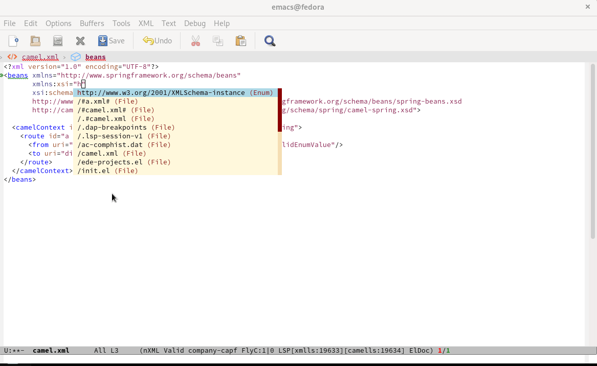
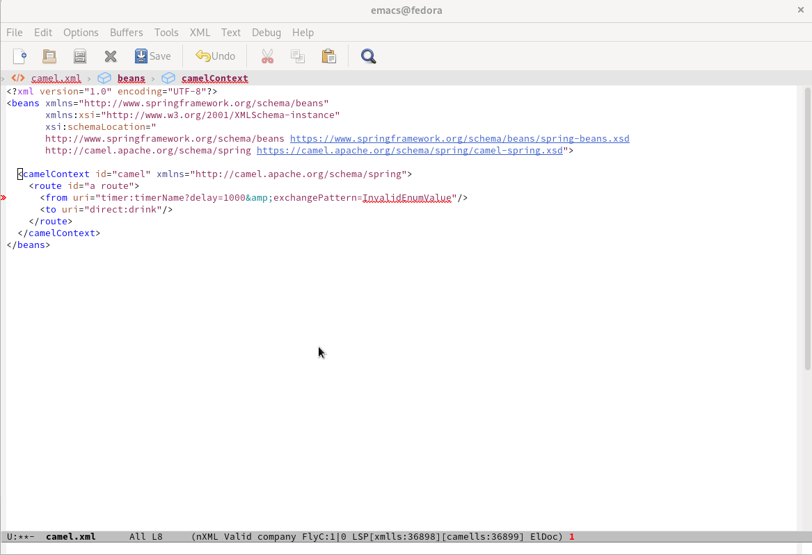
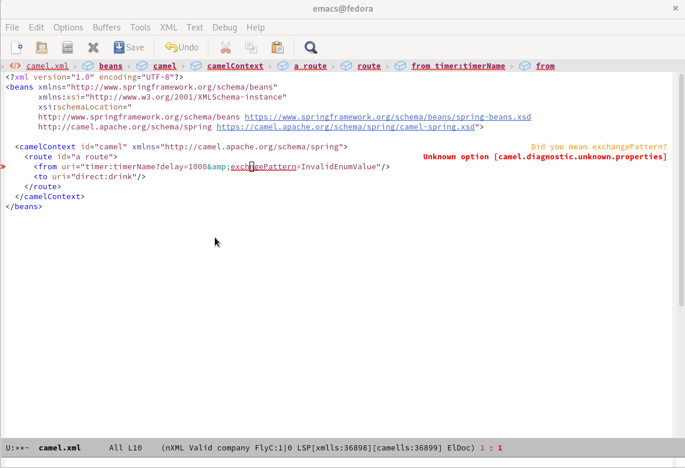

Text Editing capabilities of Camel URI with Camel XML DSL
The capabilities are based on the Camel Language Server.
For instance, code completion of Camel URI with Camel XML Dsl:

Diagnostic of Camel URI attribute value with Camel XML Dsl:

Diagnostic of Camel URI attribute name with Camel XML Dsl:

How to configure Emacs?
- For the convenience to have all the Emacs configuration in one directory, should use
~/.emacs.d/init.el
In a ~/.emacs.d/init.el file:
(require 'package)
(add-to-list 'package-archives '("melpa" . "https://melpa.org/packages/") t)
;; Comment/uncomment this line to enable MELPA Stable if desired. See `package-archive-priorities`
;; and `package-pinned-packages`. Most users will not need or want to do this.
;;(add-to-list 'package-archives '("melpa-stable" . "https://stable.melpa.org/packages/") t)
(package-initialize)
(custom-set-variables
;; custom-set-variables was added by Custom.
;; If you edit it by hand, you could mess it up, so be careful.
;; Your init file should contain only one such instance.
;; If there is more than one, they won't work right.
'(package-selected-packages '(lsp-mode)))
(custom-set-faces
;; custom-set-faces was added by Custom.
;; If you edit it by hand, you could mess it up, so be careful.
;; Your init file should contain only one such instance.
;; If there is more than one, they won't work right.
)
(require 'lsp-mode)
(add-hook 'nxml-mode-hook #'lsp)
- Create
~/.emacs.d/lsp-camel.elfile with the following content:
In a ~/.emacs.d/lsp-camel.el file:
;;; lsp-camel.el --- LSP Camel server integration -*- lexical-binding: t; -*-
;;; Code:
(require 'lsp-mode)
(defgroup lsp-camel nil
"LSP support for Camel, using camel-language-server"
:group 'lsp-mode
:tag "Language Server"
:package-version '(lsp-mode . "8.0.0"))
;; Define a variable to store camel language server jar version
(defconst lsp-camel-jar-version "1.5.0")
;; Define a variable to store camel language server jar name
(defconst lsp-camel-jar-name (format "camel-lsp-server-%s.jar" lsp-camel-jar-version))
;; Directory in which the servers will be installed. Lsp Server Install Dir: ~/.emacs.d/.cache/camells
(defcustom lsp-camel-jar-file (f-join lsp-server-install-dir "camells" lsp-camel-jar-name)
"Camel Language server jar command."
:type 'string
:group 'lsp-camel
:type 'file
:package-version '(lsp-mode . "8.0.0"))
(defcustom lsp-camel-jar-download-url
(format "https://repo1.maven.org/maven2/com/github/camel-tooling/camel-lsp-server/%s/%s" lsp-camel-jar-version lsp-camel-jar-name)
"Automatic download url for lsp-camel."
:type 'string
:group 'lsp-camel
:package-version '(lsp-mode . "8.0.0"))
(lsp-dependency
'camells
'(:system lsp-camel-jar-file)
`(:download :url lsp-camel-jar-download-url
:store-path lsp-camel-jar-file))
(defcustom lsp-camel-server-command `("java" "-jar" , lsp-camel-jar-file)
"Camel server command."
:type '(repeat string)
:group 'lsp-camel
:package-version '(lsp-mode . "8.0.0"))
(defun lsp-camel--create-connection ()
(lsp-stdio-connection
(lambda () lsp-camel-server-command)
(lambda () (f-exists? lsp-camel-jar-file))))
(lsp-register-client
(make-lsp-client :new-connection (lsp-camel--create-connection)
:activation-fn (lsp-activate-on "xml")
:priority 0
:server-id 'camells
:add-on? t
:multi-root t
:initialized-fn (lambda (workspace)
(with-lsp-workspace workspace
(lsp--set-configuration (lsp-configuration-section "camel"))))
:download-server-fn (lambda (_client callback error-callback _update?)
(lsp-package-ensure 'camells callback error-callback))))
(lsp-consistency-check lsp-camel)
(provide 'lsp-camel)
;;; lsp-camel.el ends here
-
Evaluating it by calling
M-x eval-buffer -
Loading Camel LS by calling:
M-x lsp-install-serverand choosingcamells
Follow this link to know more about configuring Emacs and have up-to-date information.
Then you can enjoy editing capabilities of Camel URI.
NOTE - The configuration will be simplified with next release of lsp-mode thanks to built-in support of Camel Language Server.